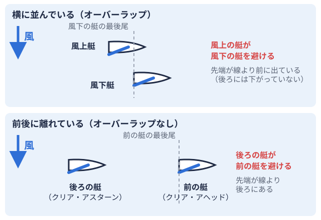

セーリング技術 2026-11-19
ヨットのマーク回航のコツ｜風上マーク・風下マークで差がつく準備と判断
ヨットレースのマーク回航で押さえたいのは、「速く、きれいに（マークや他艇に触れずに）、次のレグで狙う位置に出る」という3点です。マーク周りは艇が集まりやすく、数艇身の差が順位に表れやすい場面です。一方で、慌てて操作が雑になると、失速や接触、ペナルティにつながる場合があります。
この記事は、大学ヨット部の練習やレースで「マークでいつも順位を落とす」と感じている部員向けに、風上自分の艇から見て、風が吹いてくる側。風上へ進むにはジグザグに走る必要がある。 マークと風下自分の艇から見て、風が吹いていく側。風上の反対側。追い風で進む向き。マークの回り方を整理したものです。マーク・ルームコース上の目印のブイ（マーク）を回るために必要な水面の余地。
マークと風下自分の艇から見て、風が吹いていく側。風上の反対側。追い風で進む向き。マークの回り方を整理したものです。マーク・ルームコース上の目印のブイ（マーク）を回るために必要な水面の余地。 （規則18）などの規則面はヨットレースのルール基礎で解説しているため、ここでは技術と判断の考え方に絞ります。内容は海外の指導者の記事を参考にした一般的な考え方で、キールボートを前提にした記述も含まれます。大学ヨットの2人乗り（470級全長4.7mの2人乗り競技用ヨット。大きな追い風用の帆とワイヤーを使う。
（規則18）などの規則面はヨットレースのルール基礎で解説しているため、ここでは技術と判断の考え方に絞ります。内容は海外の指導者の記事を参考にした一般的な考え方で、キールボートを前提にした記述も含まれます。大学ヨットの2人乗り（470級全長4.7mの2人乗り競技用ヨット。大きな追い風用の帆とワイヤーを使う。 ・スナイプ級2人乗りの競技用ヨット。追い風用の大きな帆を持たず、ワイヤーも使わない。）にそのまま当てはまるとは限らないため、部のコーチや先輩の指導、大会の帆走指示書大会ごとに主催者が出す、コースやルールの取り決めを書いた文書。を優先してください。
・スナイプ級2人乗りの競技用ヨット。追い風用の大きな帆を持たず、ワイヤーも使わない。）にそのまま当てはまるとは限らないため、部のコーチや先輩の指導、大会の帆走指示書大会ごとに主催者が出す、コースやルールの取り決めを書いた文書。を優先してください。
回航の目的を3つに分ける
風上マークの回航について、ヨット指導者のDave Dellenbaugh氏は、目的を「素早く回る」「きれいに回る（マークに触れない・反則をしない）」「次のレグの戦略に合った位置で出る」の3つとしています。レースの序盤の最初のマークは、艇が密集しやすく、リスクの取りすぎに注意が必要だとも述べています（Canadian Boating｜Speed & Smarts: Tips for the Windward Mark、2022年10月31日）。
この3つは風下マークでも共通です。まず「何を優先するか」をそろえておくと、練習後の振り返りがしやすくなります。
コースと用語をそろえる
大学ヨットの大会では、風上のマークを回って風下のマークに戻る、風上・風下を往復するコースが使われる場合があります。マークの順番や、どちら側を通るかは大会ごとの帆走指示書で決まっているため、レース前に必ず確認します。初心者向けの解説でも、マークの順序や通過する側、特別な規定を事前に把握することが最初の一歩として挙げられています（iNavX｜Intro to Racing: The Skill and Craziness of Rounding Marks、2026年6月3日）。
用語は大学ヨット部の用語ガイドにもまとめています。この記事では次の意味で使います。
| 用語 | この記事での意味 |
|---|---|
| レイライン | そのタック風を艇の左右どちら側から受けているかを表す言葉。右ならスターボード、左ならポート。 のまま、タックせずにマークを回れる限界の線（一般的な意味） のまま、タックせずにマークを回れる限界の線（一般的な意味） |
| ベアアウェイ | 風上マークを回ったあと、風下へ艇を落として追い風の走りに入ること |
| ジャイブセット | マークの手前でジャイブ追い風で進むとき、艇の後ろに風を通して向きを変え、帆が反対側へ大きく振れる方向転換。 して、反対のタックで回る方法 して、反対のタックで回る方法 |
| ゾーンコース上の目印のブイ（マーク）の周囲、艇の長さ3つ分以内の範囲。ここでは回り方の特別なルールが働く。 | マークの周囲3艇身（近い艇の船体長の3倍）の範囲。規則18のマーク・ルームが働く |
風上マークの回り方
レイライン付近で起こること
風上マークに向かう艇は、左右から集まります。Dellenbaugh氏は、スターボードタックでレイライン付近にいるとき、ポートタックで後ろをかわす（ダックする）艇が、自艇の風上側でタックして進路を塞ぐ場合があると指摘しています。マークを回れるか自信がないときは、早めにポートタックへタックする選択肢があるとも述べています（前掲のCanadian Boating）。
レイラインを越えて走りすぎると距離をむだにし、手前でタックしすぎると、マーク付近でもう一度タックが必要になる場合があります。iNavXの初心者向け解説も、レイラインを越えて走ると距離を損し、早く曲がると追加のタックやジャイブが必要になることを挙げています。
ここで必要になるのが、風向の変化を読む力です。風向きの判断は風向き判断のコツ、タックの技術はタッキングとジャイビングのコツを参考にしてください。
ベアアウェイにするか、ジャイブセットにするか
風上マークを回ったあと、スピンネーカー追い風で走るときだけ艇の前方に大きく張る、ふくらんだ形の帆。を使う艇種では、次のどちらで風下に向かうかを決める必要があります。
- ベアアウェイ：マークを回ったあと、そのままのタックで風下に落とす
- ジャイブセット：マークの手前でジャイブし、反対のタックでマークを回る
Dellenbaugh氏は、まず「周りに艇がいなければ、どちら側に走りたいか」という戦略から考えることを勧めています。そのうえで、戦術面ではジャイブセットがクリアな風や風下マークでの内側の位置につながる場合がある一方、ジャイブにより、風上へ向かう艇に対する自艇の権利を手放す点に注意が必要だと述べています。操船の面では、経験の浅いクルー2人乗りの艇で、前側に座って小さな帆などを操作し、体重を使って艇の傾きを抑える人。 の場合はベアアウェイのほうが安全な選択になる場合があり、迷ったらベアアウェイにして、あとからジャイブしても遅くないという考え方です。
の場合はベアアウェイのほうが安全な選択になる場合があり、迷ったらベアアウェイにして、あとからジャイブしても遅くないという考え方です。
氏が整理した目安を、表にまとめます。
| 状況 | ベアアウェイが向きやすい例 | ジャイブセットが向きやすい例 |
|---|---|---|
| 風 | 弱い | （弱いときは向きにくい） |
| 進入 | ポートタックで来る、速度が落ちている | クリアな風で、マークの手前で準備できる |
| 後続 | 後ろの艇が少ない | 後ろの集団から離れたい |
| 乗員の習熟度 | クルーが不慣れ | 練習を積んでいる |
| 風下への走り | 右側を走りたい | 左側を走りたい |
「右側」「左側」は、海面の風や潮流で変わります。この表は一般的な目安であり、自分たちの海面で当てはまるかは練習で確かめてください。
ベアアウェイ直後に失敗しやすいこと
ヨット雑誌「Yachting World」には、マッチレースの世界的な選手Ian Williams氏への取材をもとにしたベアアウェイの5つのコツが載っています（2015年6月10日）。大学ヨットの艇種とは異なる大型艇の話も含まれますが、考え方は参考になります。
- コックピットの準備：シート帆を引いたり緩めたりして、帆の開き具合を調整するためのロープ全般。
 に絡みがないか確認し、ライン（索）にできるだけ印を付けておく
に絡みがないか確認し、ライン（索）にできるだけ印を付けておく - 艇を平らに保つ：風が軽くない場合は、乗員がハイクアウト艇が傾きすぎないよう、体を艇の外側へ乗り出して重しにすること。を続け、バングを緩めて、ジブマストより前に張る小さめの帆。大きな帆と組み合わせて風を受ける。を引き込み気味にする
- ねじれの予防：ジブの後縁の乱れた風にスピンネーカーが巻き込まれやすいため、ジブを引き込んだり、展開のタイミングを遅らせたりする
- ねじれの対処：スピンネーカーを抜けた状態で風下に走りながら、ハリヤードをあおったり後縁を引き下げたりする。それでも直らないときは降ろして直す
- 前後の艇に対する戦術：前の艇を抜くときは風上か風下かを早く決め、後ろの艇には守るか行かせるかを決める
ヒール風を受けた艇が横に傾くこと。傾きすぎると転覆しやすいため、体重などで抑える。の調整はヒール角度のコントロールのコツにまとめています。ベアアウェイの瞬間は艇が大きく傾きやすいため、スキッパー2人乗りの艇で、後ろ側に座って舵と大きな帆を操作し、進む方向を決める人。とクルーで動きをそろえておくと安定しやすくなります。役割はスキッパーとクルーの違いも参照してください。
風下マークの回り方
事前の準備を決めておく
風下マークの回航について、オリンピック金メダリストのDylan Fletcher氏（Yachting Worldでの取材、2023年1月30日、Doyle Sailsが転載）は、ずっと前から計画を立てることが最も重要だと述べています。全員の役割を決め、うまくいかなかった場合の代替案（スピンネーカーが水に落ちた場合など）も共有し、風の強さ別にスピンネーカーを降ろす時間の目安を記録して「型」にしていくことを勧めています（Doyle Sails｜Five expert tips for a leeward mark rounding）。
進入では速度を落とさない
同じ記事では、遅い速度でマークに近づくと、外側から他艇に抜かれやすいことが指摘されています。氏は、広い角度（ブロードリーチ）で、レイラインの近くを速度を保って近づくと、見かけの風が強まり、前の艇の乱れた風を抜けやすくなると述べています。ただしこれは小型から中型のキールボートの話で、風が弱い場合はレイラインより少し下を走る考え方も示されています。
潮流を確認する
潮流の向きも重要です。潮流が風上向きに流れているときにスピンネーカーを早く降ろすと、流されて後退する場合があります。反対に、潮流が風下向きに流れているときは早めに降ろして、マークを過ぎたらすぐに風上へ向ける準備をしておく、という考え方が紹介されています。潮の流れが強い海面では、練習前にマーク付近の流れを確認しておくと安心です。
出口で次のレグを決める
風下マークは、入口よりも出口が重要だとされています。Fletcher氏は、ゲートが複数ある場合でも、最短距離で選ぶのではなく、次のレグで自分たちが行きたい側を基準に選ぶことを勧めています。Sailing World（2017年11月28日）のレース解説でも、先頭の艇が進入で速度を調整し、マークを高い側のレーンで出る例が、次のタックへ入る前の位置取りとして紹介されています。
回航中は、メインを早めに引き込み、ジブを少し緩めておくと、舵を大きく切らなくても艇が回りやすくなるとされています。舵を大きく切るほど抵抗が増えるため、小さな操舵で回る考え方です。
前の艇が絡む場面での注意
前の艇の風下側に出ると、距離と速度を失う一方で、その艇の航跡の風上側のきれいな風に入れる場合があります。ただし、マーク付近の乱れた風や波、混雑に入ってしまう場合もあります。どちらを選ぶかは、次の風上レグでどちら側に行きたいかで決まります。
マーク周りで覚えておきたい規則と注意
回航の技術を磨くときも、規則を知らないと意図せず反則になる場合があります。
- ゾーンは、マークの周囲3艇身の範囲で、この中では規則18のマーク・ルームの規則が働きます。ゾーン内の判断は、艇が最初にゾーンに達した時点でオーバーラップ2艇が前後に重なって並んでいる状態。どちらも相手の最後尾より完全に後ろにはいないとき。

があるかどうかで変わります。詳しくはヨットレースのルール基礎の規則18の節を参照してください。 - マークに艇やロープが触れると、触れたものとして扱われる場合があります。iNavXの解説では、ロープがマークに触れた場合もペナルティ対象になるとされています。
- 他艇に規則を主張するのは、必要な立場の人が、規則を理解したうえで行うのが基本です。規則の主張は声のかけ方も含めてチームで決めておくと混乱が減ります。
規則の詳細は、必ず最新の規則書（World Sailingの「セーリング競技規則世界共通のヨットレースのルールブック。4年ごとに改訂される。」）と大会の帆走指示書で確認してください。
練習メニューの例（部の練習に取り入れる場合）
ここまでの内容を練習に落とすと、次のようになります。いずれも編集部の提案であり、実施の可否や安全面は部の指導者の判断に従ってください。
| 練習 | ねらい | 内容の例 |
|---|---|---|
| 役割確認 | 回航の型づくり | マークの手前で誰が何をするかを紙に書き、一度声に出して確認する |
| 小さなコースの反復 | 手順の定着 | 風上マークと風下マークだけの短いコースを周回し、毎周の動作をそろえる |
| ベアアウェイ練習 | 直後の安定 | マークの横で、ベアアウェイとスピンネーカー展開を繰り返し、ヒールと動きを確認する |
| 進入速度の比較 | 風下マーク | 同じマークに「遅く入る」「速く入る」を交互に行い、出口の位置を比べる |
| ビデオ振り返り | 判断の言語化 | 回航の様子を撮影して、迷った瞬間を一緒に見直す |
全体の組み立てはヨット部の練習メニュー基礎、スタートの考え方はヨットのスタートのコツ、クルーの動きはクルーの練習方法も参考になります。
練習の成果を大会の成績で振り返る
自分たちの回航を振り返るとき、大会の成績表も手がかりになります。ただし成績表から分かるのは順位や反則の略号までで、マークでの出来事の理由までは分かりません。理由は、レース後の振り返りや帆走指示書などで確認します。
ヨットマニアでは、次のページから大会情報と成績にアクセスできます。ディレクトリの掲載対象は関東36校・近畿北陸10校のみで、他の水域全国の大学ヨット部を地域ごとに分けた区分。北海道から九州まで全国に9つある。は成績PDFへのリンクのみの掲載です。
観戦の立場でマーク周りを見るときの視点は大学ヨットの大会の見方にあります。
よくある質問
風上マークでは、ベアアウェイとジャイブセットのどちらを選べばよいですか？
戦略と乗員の習熟度で変わります。Dellenbaugh氏は、周りに艇がいなければどちらへ走りたいかを考えたうえで、経験の浅いクルーならベアアウェイを選ぶ場合があり、迷ったらベアアウェイにすると述べています。部の練習で両方を試し、自分たちの海面で比べてみてください。
風下マークで一番気をつけることは何ですか？
進入の速度と、出口の位置です。Fletcher氏は、遅い進入で他艇に外から抜かれることを避け、次のレグで行きたい側を基準に出口を決めることを勧めています。
マークに触れてしまったときはどうなりますか？
マークに触れた場合の扱いは規則で定められており、その場で自ら回転ペナルティルール違反をしたかもしれないとき、レース中にその場で艇を回して償う方法。2回転か1回転。を行う方法があります。ただし大会ごとに別の扱いが定められている場合もあるため、規則書と帆走指示書で確認してください。詳しくはヨットレースのルール基礎にまとめています。
2人乗りの艇でも同じ考え方が使えますか？
役割分担を決めておく、進入と出口を意識する、といった考え方は共通して参考にできます。ただし、紹介した記事の多くは大型艇やキールボートを想定しているため、大学ヨットの艇種に合う手順は、コーチや先輩に確認してください。
まとめ
マーク回航は、(1)目的を「速く・きれいに・次のレグへ」でそろえる、(2)風上マークではレイライン付近の混雑とベアアウェイかジャイブセットかの判断を整える、(3)風下マークでは役割と進入速度、出口の位置を決める、(4)練習で型をつくる、の4つに分けると取り組みやすくなります。紹介した内容は海外の指導者の記事で挙げられている一般的な考え方で、大学ヨットの海面や艇種にそのまま当てはまるとは限りません。まずは短いコースで役割を確認し、ビデオで振り返りながら、自分たちの型をつくることから始めてみてください。
出典
- Dave Dellenbaugh「Speed & Smarts: Tips for the Windward Mark」Canadian Boating、2022年10月31日 https://canadianboating.ca/speed-smarts/speed-smarts-tips-for-the-windward-mark/
- Dylan Fletcher「Five expert tips for a leeward mark rounding」（Yachting World、2023年1月30日の記事をDoyle Sailsが転載） https://www.doylesails.com/five-expert-tips-for-a-leeward-mark-rounding/
- Belinda Bird「5 tips: the bear away」Yachting World、2015年6月10日 https://www.yachtingworld.com/features/5-tips-the-bear-away-64998
- Sailing World「4 Steps to The Leeward-Mark Tack」2017年11月28日 https://sailingworld.com/how-to/4-steps-to-the-leeward-mark-tack
- iNavX「Intro to Racing: The Skill and Craziness of Rounding Marks」2026年6月3日 https://inavx.com/2026/06/03/intro-to-racing-the-skill-and-craziness-of-rounding-marks
- World Sailing「The Racing Rules of Sailing」 https://www.sailing.org/racingrules/
PR
この部活・競技を応援したい方へ
体育会学生を支援するプラットフォーム「ツナカレ」で、応援できる部活を探せます。
PR
取材してほしい部活を募集中
あなたの部活・大会を取材してほしい方はこちらからご依頼ください。
部活を続けながら、就活も進めたい方へ
体育会の学生のための就活相談です。無料で、メールアドレス・学年・所属の入力だけで始められます。